Every choice on the site, with what it comes from and why
What you asked, and where it is
- « respecter les codes couleurs, les gradients, tout ce sur quoi repose la marque »Every colour, ramp and light is measured on the book. Nothing picked by eye.
- « ce gradient, cet effet, dans la plupart des aspects du site »The light of the book on the dark pages; the pill on the words that act.
- « continuer à utiliser les fonts ici », « les 12 [règles] dans la typographie »Ulrich for headlines, the plain face for text, the brush for one to three words. The do’s and don’ts are checked on every page.
- « règle de layout, version Mac, ordinateur, téléphone »12 columns, 6 on a phone. Press G on any page to see the grid.
- « they really need to see images, each time an image of a place for the vocation of the space »The opening: twelve full pictures, one per vocation.
- « I love the circle thing that turns, do it better »The wheel: twelve pictures on a dial, turned by hand.
- « des icônes inspirées des icônes qui existent », « on explique tout le processus de création »The icons page: the recipe in four steps, the set, the signs.
- « un visuel de bâtiment avec plusieurs couleurs, le recréer en three.js »The place in 3D, on the real ground, on Rent, Invest and About.
- « the 3D idea of layers, 99% faithful to the sheets »The nine floor plans as layers.
- « utiliser l’outil du clonage et prendre 20 % de chaque site »Nine sites read in their own code.
- « recréer le site web qu’on a déjà cloné », « switching texts between English and German, instant »Home, Rent, Invest, About, Contact and its two forms, with the words and pictures of the live site, in both languages.
Colour and light
No colour is picked by eye. The nine hues, their four shades and the round light of the dark pages are read on the brand book, and the site is compared with the book by a tool.
One hue per page, following the order of the book’s colour columns: Home red, Rent violet, Invest purple, About blue, Contact turquoise. The pill takes the hue of its page.
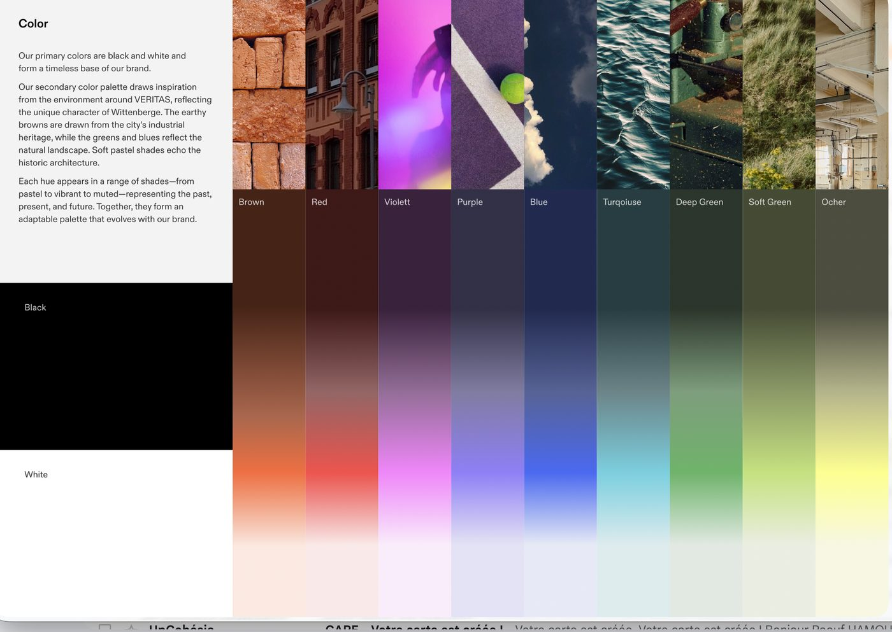
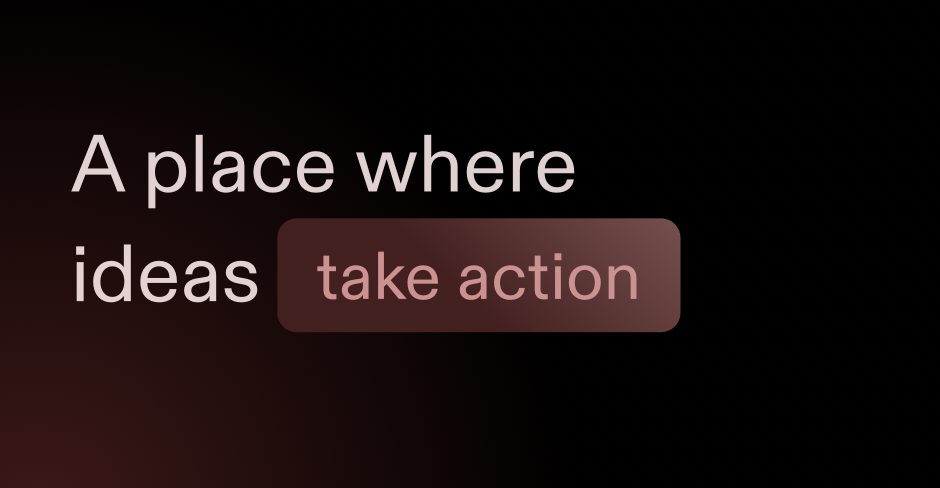
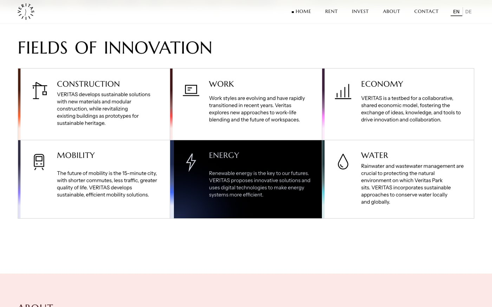
Type and layout
The pages of the site are set like the pages of the book itself: the name of a block in Ulrich capitals on a thin line, a large headline, a narrow column of text beside it.
A long sentence is set smaller than a short one, in English and in German. Nothing is aligned to the right, no body text is in capitals, the brush face carries three words at most, the line height is 140 %. The fonts are free stand-ins (Marcellus, Instrument Sans, Gochi Hand) until the three real files are bought.
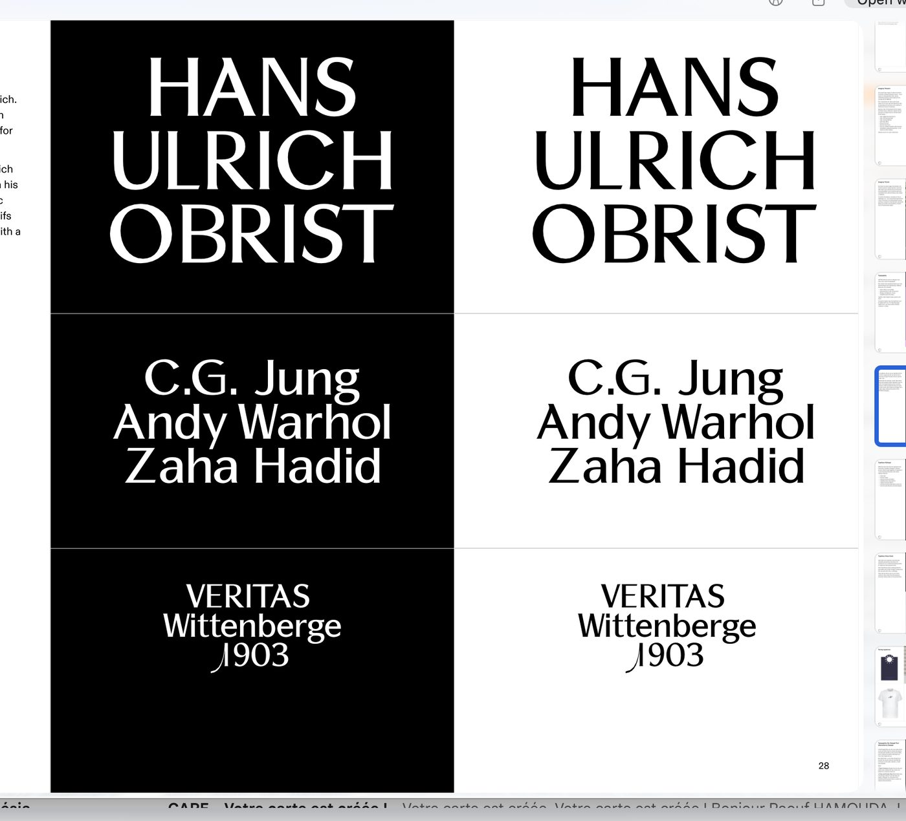
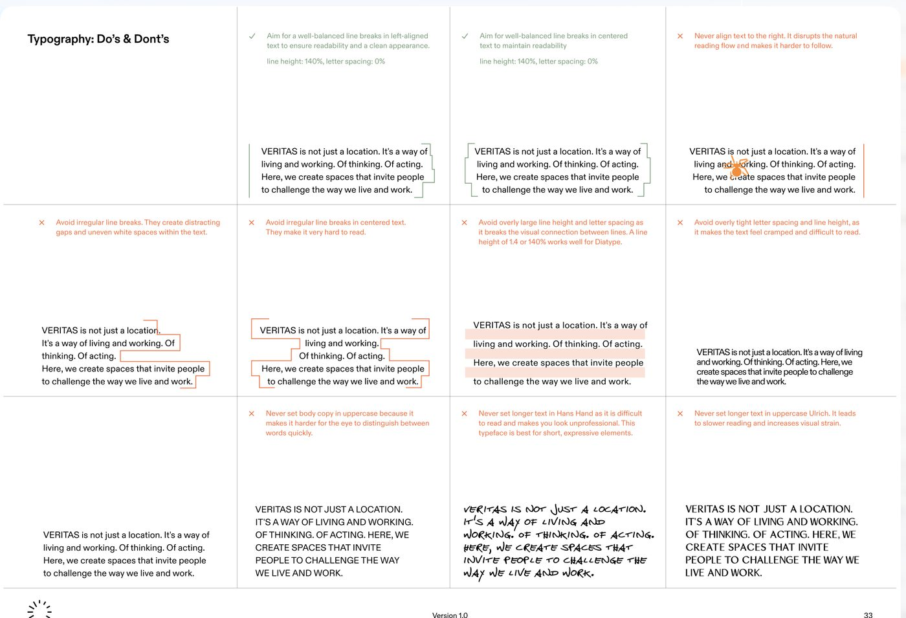
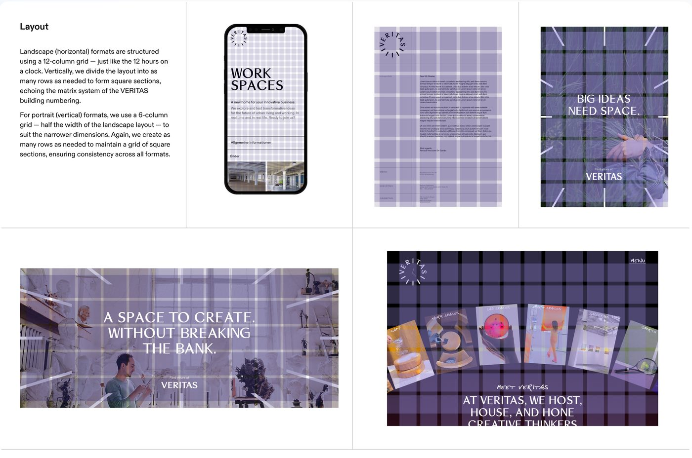
The opening and the wheel
A visitor sees the place first. Twelve full pictures, one per vocation, like the twelve hours; then the same twelve on a dial that turns by hand.
The vocation of each picture comes from the number of the building in the photograph’s file name on the live site, and from what the press and the floor plans say of that building. The dial of the opening is the symbol, and it moves with the move chosen on 20 November. The book had already drawn pictures on an arc for the website (p37).
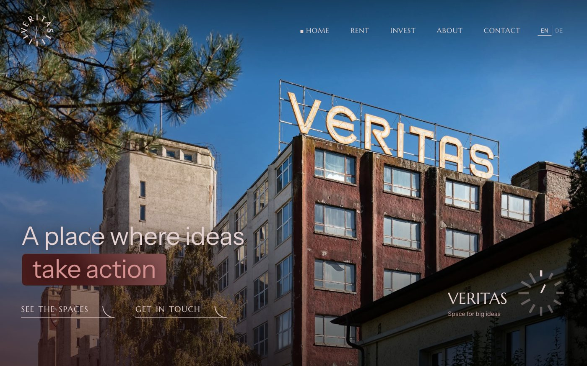
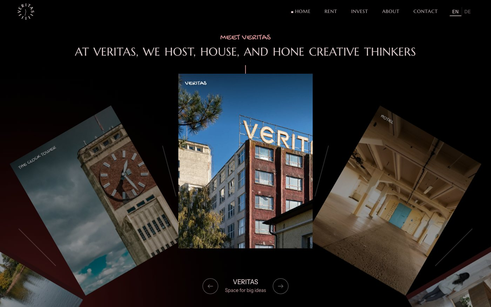
Icons and signs
The six icons of the book are used as they are. Thirty-two more are drawn on the same square. Buttons and menu lines are the wall signs of the book.
On a sign the icon stands on a long line, the word sits on it in capitals, and the line ends in a quarter curve. On the site that line and its curve are drawn in one stroke.
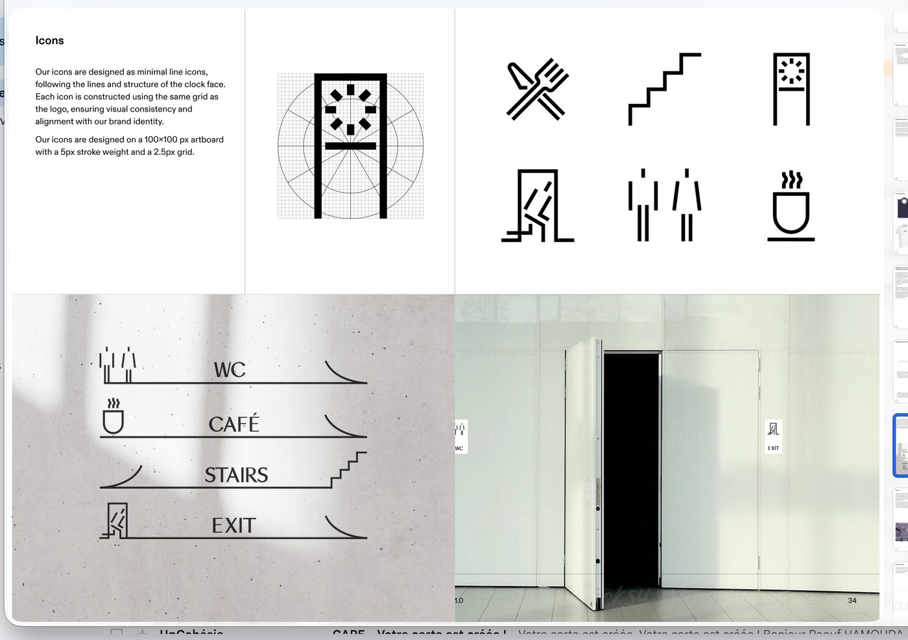
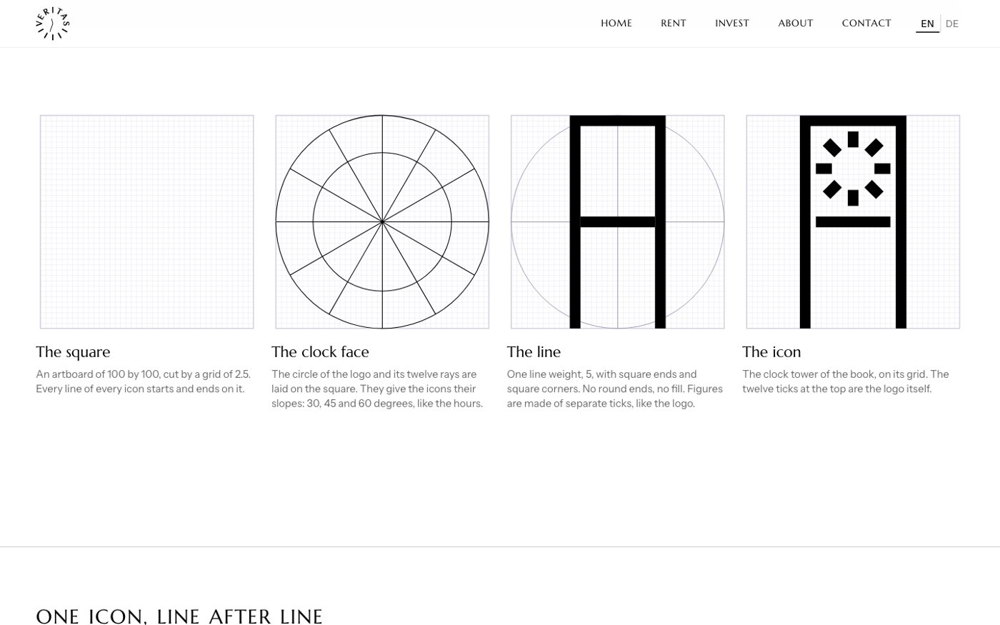
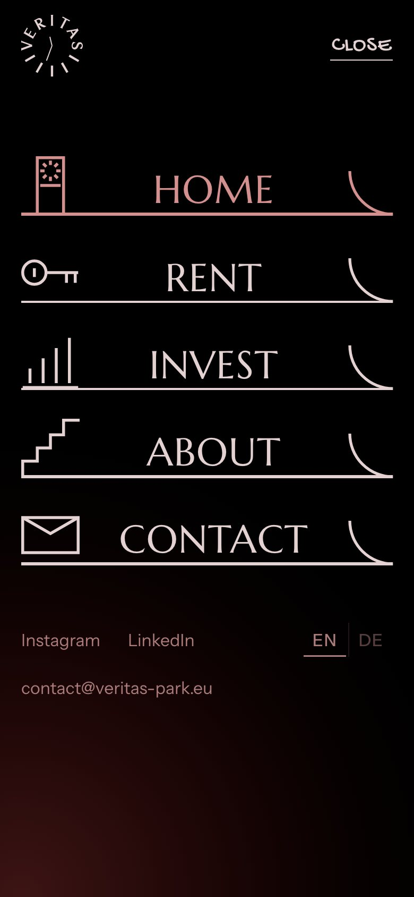
The place, in 3D
The coloured map of the live site, rebuilt as a model that stands on the real ground.
The outlines of the buildings, the Stepenitz and the harbour, the streets, the railway and the rows of trees come from OpenStreetMap. The numbers of the buildings and the six quarters come from the plan of the live site, laid on that map. The clock tower, the chimneys and the letters on the roof are modelled on the photographs. Which quarter covers which part of the plan is my reading of the map.
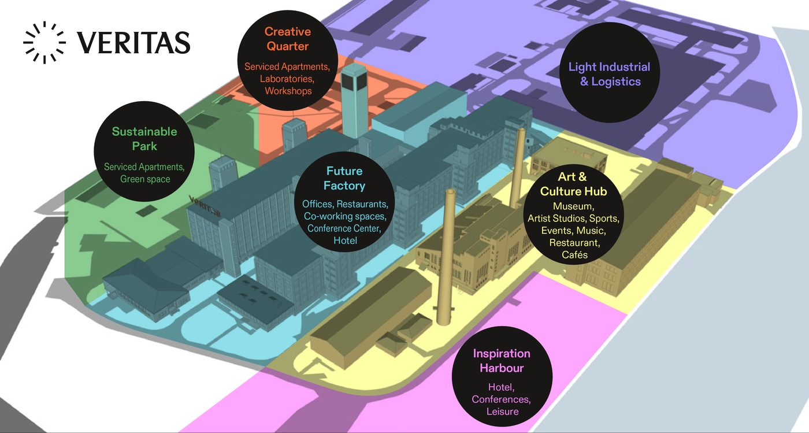
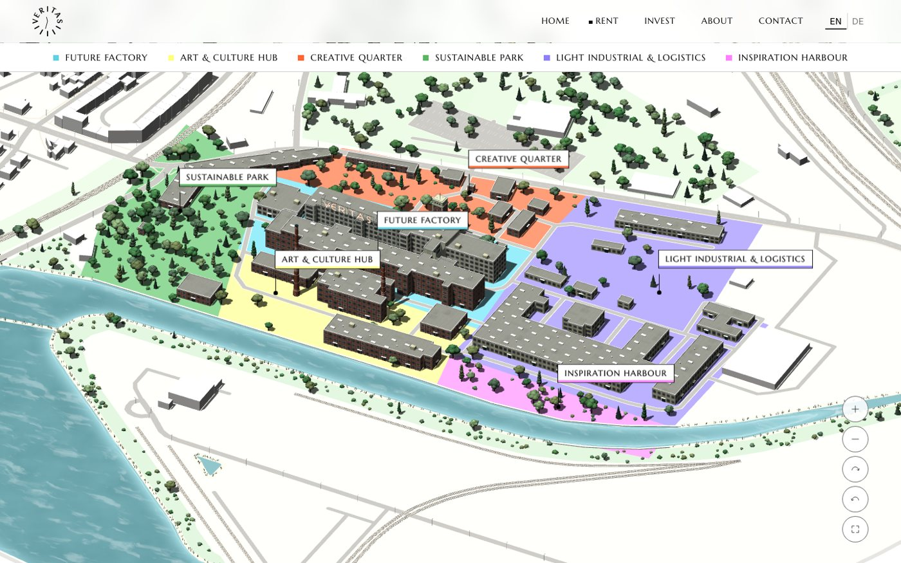
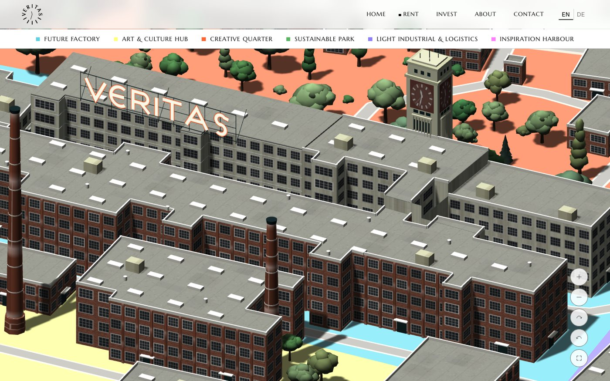
The floor plans
The nine plans of the live site are the nine floors of one building, so they stand one above the other. The drawings are untouched.
Point at a floor and its sheet slides out of the stack. Click it and it comes flat and large, to be read and zoomed.
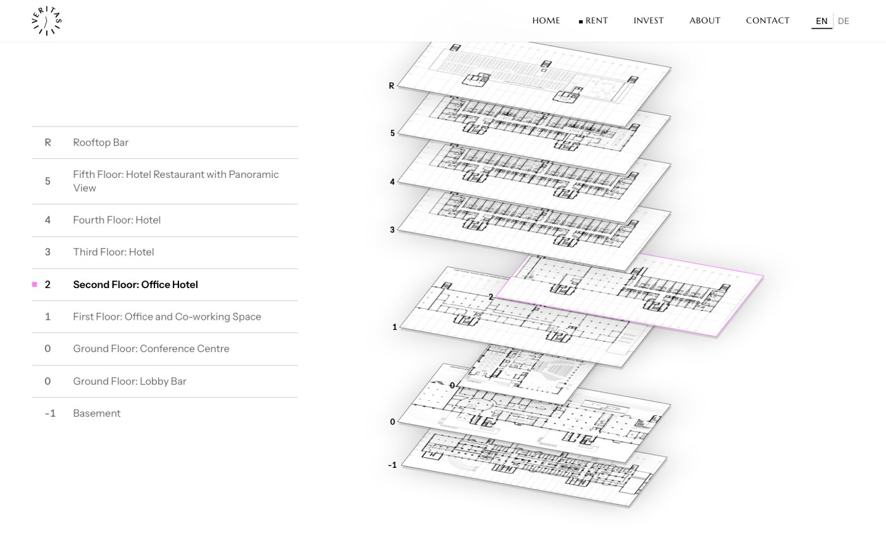
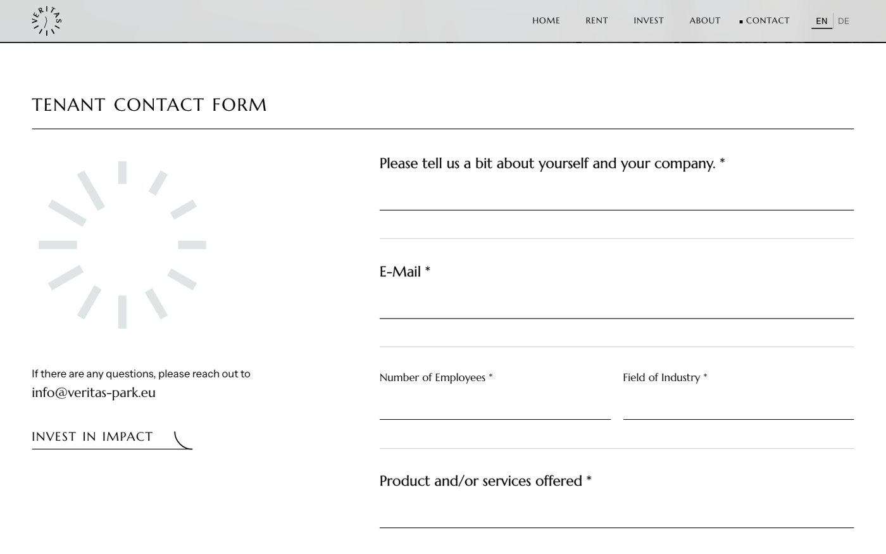
A part of each site
| Site | What it does, in its own code | What the site takes |
|---|---|---|
| Adverse Production | Your own site: the pages written in the bar, section heads with a big title and a short text beside it. | The menu bar on a computer. The order of sizes of a section. |
| Vitra Campus | Opens on pictures of the place and nothing else. Tiles keep fixed proportions. | The opening in full pictures. |
| Atelier Gardens | Writes its grid with one variable: repeat(var(--grid-columns), 1fr). Draws its campus from above. | One variable for the 12 and 6 columns. A place you read from above. |
| LUMA Arles | An institution’s page: square corners everywhere, thin rules, the programme in rows. | White pages with thin lines. |
| Spinnerei Leipzig | The whole home page is cells between lines of one pixel. | Tiles between thin lines (amenities, fields, icons). |
| KALLE Neukölln | An isometric drawing of the building beside the list of its worlds. | The model drawn without perspective, with the list of its quarters. |
| Dennis Snellenberg | Type sizes written clamp(3.25em, 7vw, 8em); his local time in the footer. | Sizes that follow the width. The logo tells the time. |
| Gil Huybrecht | One curve for nearly every move: cubic-bezier(.19, 1, .22, 1), 78 times in his styles. | That curve, for everything. |
| Dominik Fojcik | A short loading screen, and a door that asks Allow or Decline for movement. | The arrival tile. No movement for visitors who ask for less. |
Movement
- The symbol builds itself round the circle: on arrival, on the dial of the opening, on the logo of the footer (the move you picked, number 2 of ten).
- From one page to the next the browser fades the old page into the new one. No white page in between.
- From English to German the words step back, change and come back. The block you are reading stays in place.
- The logo is a clock set to the time in Wittenberge. The book allows hands and forbids turning the letters: they never move.
- One curve and three lengths for everything else. Visitors who ask their device for less movement get none.
Not done, or yours to decide
- Fonts: free stand-ins. The three real files replace them in one line each.
- German: the German of the live site. The words that exist only here (names on the pictures, buttons, answers of the forms) are my German, to be read by the client.
- Forms: they open the visitor’s mail with the answers. To wire to the client’s form service at launch.
- Imprint and Privacy Policy: the links go to the live site’s pages.
- The three renders of Rent were redone by Gemini from the originals; the originals are kept.
- No background video for now.